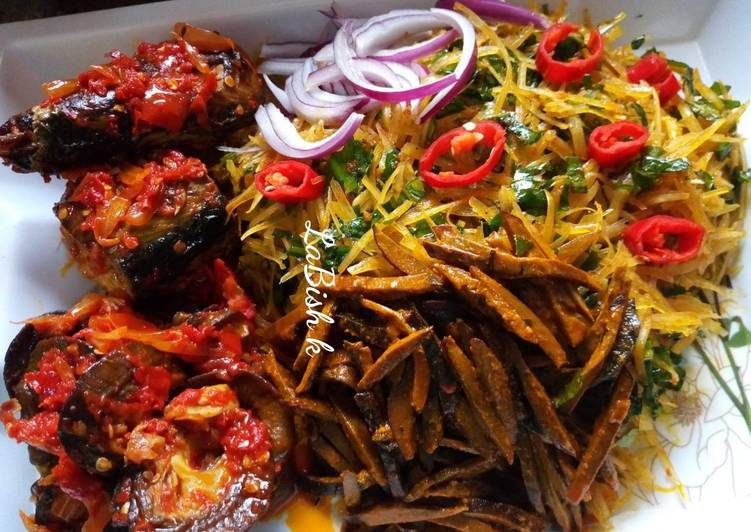

Abacha

Description
Abacha is an Eastern Nigeria dish made using dried, shredded cassava. You can eat it as a snack or a full meal. There are many variations to making this salad, but the more ingredients you add, the tastier the dish is. Whichever way you prepare or eat it, warm or cold, it will still come out delicious.
Served with two pieces of fresh fish and tasty cow skin, it’s a filling meal with many different flavours.
Ingredients
- 600g abacha
- 2 cups ugba or ukpaka
- 1 cup palm oil
- 2 tbsps powdered potash
- Fish, spiced and cooked
- Ponmo, cooked and sliced
- 1 large onion, chopped/li>
- 6 garden eggs, diced
- Garden egg leaves, chopped
- Salt and dry pepper (to taste)
- 4 tbsps ground crayfish
- Boiling wate
Steps
- Soak the abacha in cold water for 10 minutes until it softens, then pour boiling water over it and drain.
- Rinse the ugba with warm water.
- Dissolve the potash in water and sieve out the water. Stir the potash water with the palm oil in a pot until it forms a yellowish paste.
- Place on heat and add the ground ehu, pepper, crayfish and seasoning.
- Stir, then add crushed stock cubes, diced onions and ugba. Take off the heat.
- Add the ogiri and mix, then add meat and fish.
- Add the abacha and mix, allowing the ingredients to blend.
- Add sliced utazi and salt to taste.
- Garnish with chopped garden egg leaves and sliced onions.